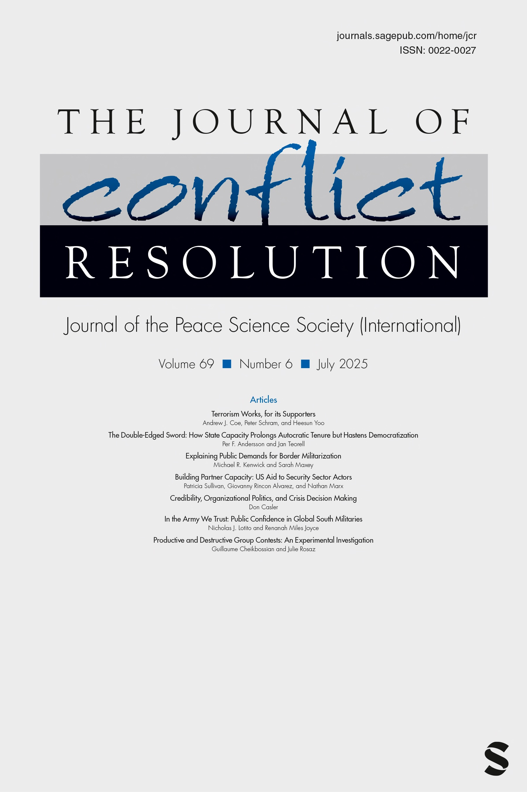
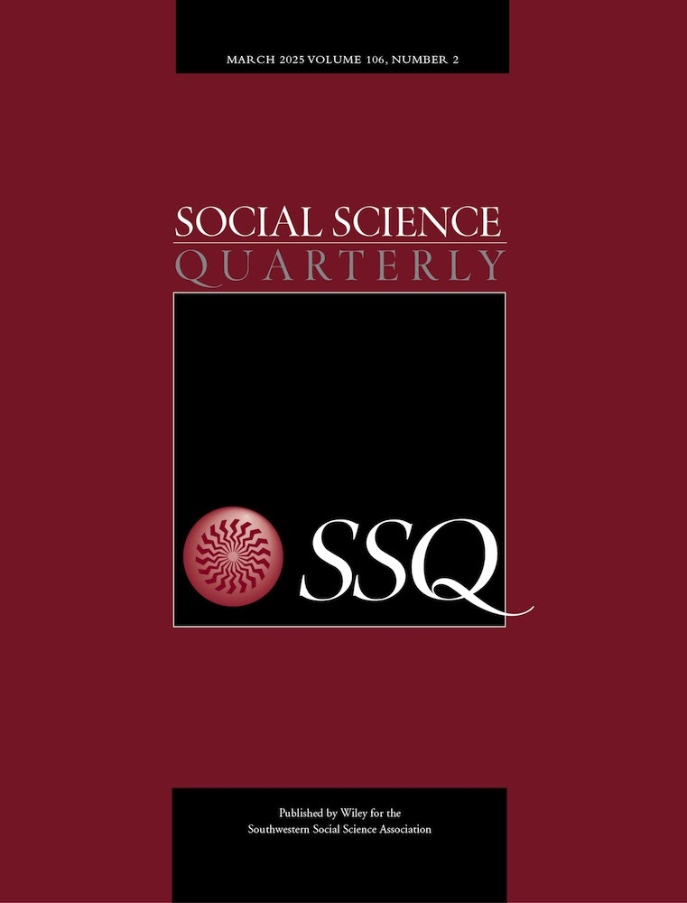
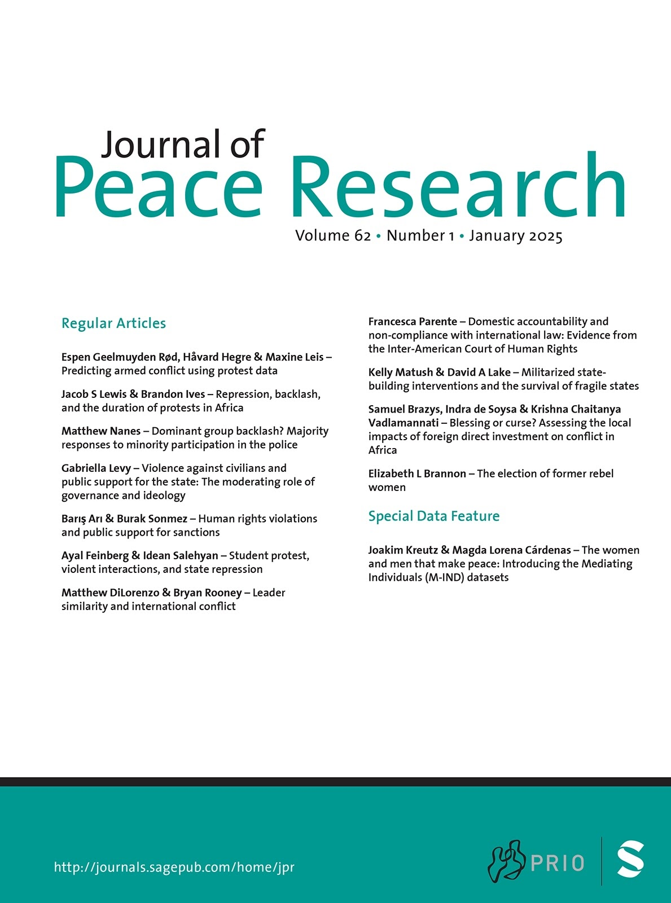
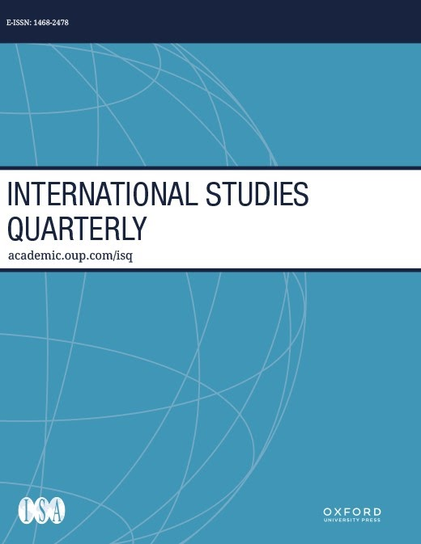

Photographs from Hokkaido & Kanagawa
工藤靖樹 / Yasuki Kudo is a Ph.D. candidate in the Department of Government at the University of Texas at Austin. Before joining UT Austin, he studied political science at universities in the United States, the United Kingdom, and Japan. From 2020 to 2024, he was a Ph.D. student in the Department of Political Science at the University of Kentucky.
His research focuses on international security and cooperation. He uses quantitative methods to study military alliances, human rights, and public opinion. His work appears or is forthcoming in peer-reviewed journals, including International Studies Quarterly, Journal of Peace Research, and Journal of Conflict Resolution.
Interests
Military alliances
Arms transfers
Human rights
Public opinion
Education
-
MA in Political Science, 2024
University of Kentucky -
MA in Political Science, 2020
Kobe University -
MA in International Relations, 2019
University of Essex -
BA in Law, 2017
Hokkaido University
Publications
Does the US Really Embolden its Allies? Evidence from a Survey Experiment in Japan
Do patrons’ signals of security commitments embolden junior partners? The literature on military alliances suggests that this might be the case: supportive gestures by patrons could motivate junior partners to adopt more aggressive postures in their own disputes than they would without such support. While the theoretical logic is compelling when considering states as unitary actors, it is less clear if this logic applies to the domestic public that may have differing interests from leaders. To complement this gap, we conducted a survey experiment in Japan, a close US ally with a territorial dispute with China, to explore the impact of US presidential signals on public support for adopting aggressive policies towards China. We find that US signals increase the credibility of US military intervention in territorial disputes; however no evidence of an emboldenment effect is found—public support for escalatory policies does not increase accordingly. Additionally, we find that US signals do not encourage the public to punish leaders backing down after announcing aggressive policies. These findings challenge the conventional understanding of an important effect of alliance politics.
- Yasuki Kudo & Viet Hung Nguyen Cao
- Journal of Conflict Resolution
- July 2025 (OnlineFirst)

A Forgotten Tie Between Democracies and Nondemocracies in Asymmetric Cooperation
Objectives. I examine the linkage between regime type and the durability of interstate cooperation. While scholars have argued that a pair of democracies is better than other combinations of regime types in achieving successful cooperation because of their accountable domestic institutions, I contend that less accountable institutions in nondemocracies can facilitate certain types of cooperation when states need to cede some autonomy to their cooperation partners. I expect that when cooperation necessitates multiple types of contributions, such as credible commitment and autonomy, a combination of mixed regimes can effectively achieve sustainable cooperation. Methods. My argument is examined in the context of asymmetric alliances, a form of cooperation characterized by the exchange of security and autonomy between a major power and a minor power. I use data on bilateral alliances from 1816 to 2001 for empirical analysis. Results. An asymmetric alliance formed between a democratic major power and a nondemocratic minor power is as durable as a joint democratic asymmetric alliance. Conclusions. My findings indicate that joint democracy is not always the best combination of regime types for interstate cooperation and that there are circumstances in which nondemocracies can facilitate cooperation.
- Yasuki Kudo
- Social Science Quarterly, Volume 106, Issue 2
- March 2025

Rewarding Loyalty: Selective Reassurance and Enforcement of Asymmetric Alliances
Great powers frequently signal their alliance commitments during peacetime. While scholars see this peacetime practice as an integral part of great powers’ alliance maintenance, there is significant variation in the intensity of signals that junior allies receive. This article suggests that the choices made by great powers in signalling alliance commitments can be explained by the motivation to encourage compliance among junior allies. Great powers typically form alliances to exert control over their junior allies’ decision-making and thereby maintain their sphere of influence. Yet, great powers may face difficulty in making junior allies accommodate their demands as junior allies’ interests are not always in alignment. This article argues that great powers attempt to maintain their allies’ incentive to comply by reaffirming alliance commitments as an ex-post reward. In addition, to increase the efficiency of this reward strategy, great powers carefully select the targets, taking into account their allies’ willingness to make concessions. Empirical analysis using the sample of United States alliance relationships provides evidence that supports these arguments. This article contributes to the literature by deepening our comprehension of how great powers manage their alliances and providing at least a partial answer to how asymmetric alliances are maintained. Furthermore, this article has important implications for how great powers maintain their status within the international system.
- Yasuki Kudo
- Journal of Peace Research
- December 2024 (OnlineFirst)

Human Rights Promotion and Democratic Allies
Do military alliances promote human rights? Scholars and practitioners generally believe they do not because states form alliances largely to advance their strategic interests and thus are not interested in members’ domestic policies. I claim that some states may care about their allies’ human rights practices. Specifically, democracies are concerned that alliance relationships with rights-abusing governments harm their reputation, and thus urge their allies to improve human rights. However, this rights-promoting motivation is constrained because democracies also need to preserve alliance partnerships with governments that may rely on repression for their internal security. Empirical analyses of alliance relationships between democracies and autocracies provide support for this argument. Autocracies with a powerful democratic ally implement relatively advanced human rights protection; however, this association becomes weaker as the risk of domestic conflict becomes higher. These findings suggest the importance of considering democratic allies in the international promotion of human rights.
- Yasuki Kudo
- International Studies Quarterly, Volume 68, Issue 4
- December 2024

In Progress
Alignment and Concessions in Asymmetric Military Alliances
It is commonly understood that when smaller powers enter into military alliances with major powers, they will need to surrender some degree of policymaking autonomy. Major powers form alliances with militarily weak states and provide them with security in hopes of influencing their foreign policy. Despite the importance of autonomy for alliance relationships, measuring the degree to which major powers influence the foreign policy behavior of their weaker partners is notoriously difficult. Most notably, major powers seek a variety of concessions from their partners that vary across allies and over time. Thus, relying on a single proxy or what is formalized in alliance treaties will fail to fully capture the concessions major powers obtain from their allies. We overcome this challenge using a statistical measurement model to estimate the autonomy of US allies based on a variety of US foreign policy priorities in the post-WWII period. Our approach provides a continuous latent measure of autonomy for all US allies from 1950 to 2010. This new measure allows us to assess US influence over their partners across alliances and over time. We also use the measure to examine the impact of alliance commitments on our autonomy scores relative to other types of commitments from the US and show that the US alliance network appears to play a central role in gaining influence abroad. In short, our paper provides a promising measurement strategy for a fundamental feature of alliance relationships and presents new insights into the impact of alliances on interstate relations.
- Jesse C. Johnson , Yasuki Kudo & Andrew G. Long
Trapping a Friend: How do Arms Transfers Constrain Alliance Partners?
Why does the US provide more arms to some allies than to others? Existing theories suggest a deterrence effect: great powers use arms transfers to deter military attacks on the recipients by third-party states. However, this logic cannot explain the fact that the US transfers significant amounts of weapons to militarily powerful alliance partners, who would deter their opponents even without arms transfers. In this article, we propose that the US aims a constraining effect of arms transfers: great powers send weapons to their allies that are likely to defeat their opponents, hoping to increase their reliance on the great powers’ weapons and prevent the allies from provoking. Our models, in which we assume these two competing effects of arms transfers, reveal that arms transfers are sent to powerful countries only when they have a constraining effect. Empirical analyses using the US arms-transfer data with two-way fixed effect models show a positive association between arms transfers and power, as well as a reduced probability of provocation by recipients. This research contributes to our understanding of the unrecognized aspect of arms transfers, such as how great powers control their allies and, more broadly, how the US maintains the world order.
- Yasuki Kudo & Yuji Masumura
Misreading the Public? Rethinking Survey in Interstate Disputes
Do surveys provide credible information on public opinion in interstate disputes? Politicians and critics generally rely on public opinion surveys to understand which policy options the public favors in disputes. We provide empirical evidence that casts doubt on the credibility of such surveys: respondents may falsify their preferences when they favor contentious approaches, specifically, the mobilization of force and concessions to adversaries. This is because these approaches are sometimes deemed socially undesirable, and thus, respondents feel pressure to conform their responses. A list experiment evaluating Japanese voters’ opinions on the territorial dispute with China shows that the use of a direct question format underestimates support for these two options by 15 to 18 percentage points compared to the list format. Our findings have methodological and theoretical implications for various actors who have an interest in and study public opinion in disputes.
- Yasuki Kudo, Sohei Shigemura & Makito Takei
External Threats and Repression
Naming and Shaming is an Opportunity in Disguise
Domestic Consequences of Naming and Shaming
Measuring True Preferences on International Organizations
Teaching
-
Assistant
- GOV 360C: Introduction to International Relations, Spring 2025
- GOV 350K: Statistical Analysis in Political Science, Fall 2024
-
Solo instructor
- PS391-701: Special Topics in Political Science—Asian Security, Fall 2023; Spring 2024
- PS372: Introduction to Political Analysis, Fall 2022 & Fall 2021
-
Assistant
- PS417: African Politics, Spring 2022
- PS439: International Security, Spring 2021
- PS230: Introduction to International Relations, Fall 2020